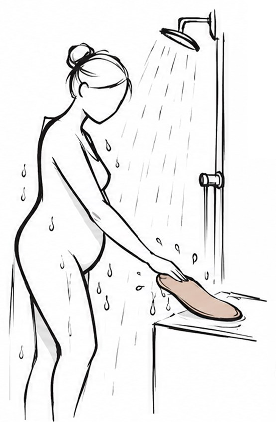
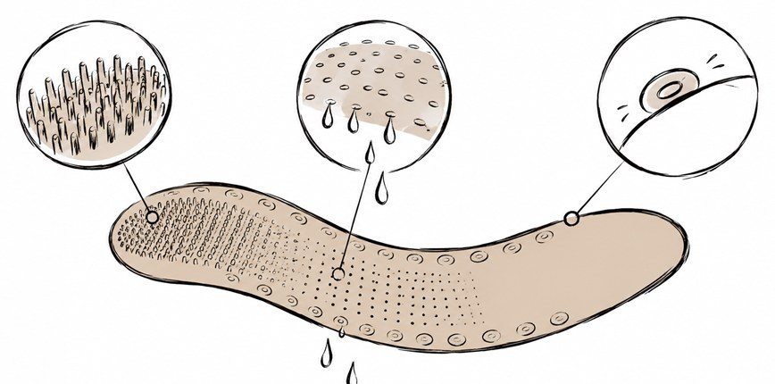

Accesorio de higiene corporal para la ducha que lava, con una sola mano, las zonas a las que no llegas.
Tú te lavas lo que alcanzas. Mareta se encarga del resto.
El proyecto
Ducharse se complica cuando el cuerpo deja de llegar a sí mismo. La espalda, los pies, la zona íntima y los pliegues obligan a agacharse, girar o sostenerse sobre una pierna en el lugar con más riesgo de caída, o a pedir ayuda y perder intimidad.
Mareta es una pieza de silicona flexible de 65 cm que se sujeta con una sola mano por cualquiera de sus extremos. Se apoya en el hombro y baja por la espalda, se enrolla en la pierna y desciende en espiral hasta envolver el pie, y recorre los pliegues retirando la humedad. Su cara combina microcerdas, poros que dosifican agua y jabón y una zona lisa; un extremo exclusivo aclara la zona íntima con 180 ml, sin frotar.
Sin app ni cámara: un toque o la voz. Guardarla en su cuenco es cargarla. Lava con la ducha cerrada: menos agua.
Mareta
Tú te lavas lo que alcanzas. Mareta se encarga del resto.
01El momento
De pie, con el cuerpo mojado y con jabón, sobre un suelo resbaladizo. Lo que no se alcanza queda mal lavado o exige pedir ayuda.

02Una pieza, tres texturas

MicrocerdasFriegan la piel de la espalda, las piernas y los pies.
PorosSueltan agua y jabón mientras lava.
Extremo lisoAclarado íntimo con 180 ml de agua, sin frotar.